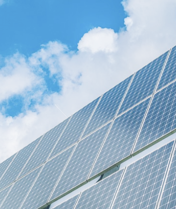

- 屋根点検
- 高性能な赤外線カメラを搭載したドローンを使用し、建物の外壁や屋根の
画像データを非接触で収集します。
これにより、効率的かつ正確な点検が可能となり、建物の状態把握や問題箇所の早期発見に貢献します。
また、ドローンならではのアクセスの難しい箇所へのアプローチも可能です。
- 外壁点検
- 高性能な赤外線カメラを搭載したドローンを使用し、建物の外壁や屋根の
画像データを非接触で収集します。
これにより、効率的かつ正確な点検が可能となり、建物の状態把握や問題箇所の早期発見に貢献します。
また、ドローンならではのアクセスの難しい箇所へのアプローチも可能です。
- ソーラーパネル点検
- ドローンによる点検により、従来の方法や目視では難しかった場所や高所にあるパネルも迅速かつ効率的に点検することができます。
また、映像やデータの取得により、異常箇所の特定やメンテナンス計画の立案にも貢献します。

- 測量
- 高度な航空写真撮影や精密な地形データの収集を通じて、効率的かつ正確な測量を実施します。
ドローンによる測量は従来の方法と比べて迅速かつコストが低く、
さまざまな用途に適用できます。
また、データの解析や報告書の作成も行い、お客様のニーズに合わせた最適なソリューションを提供します。
- 空撮
- ドローンによる点検により、従来の方法や目視では難しかった場所や高所にあるパネルも迅速かつ効率的に点検することができます。
また、映像やデータの取得により、異常箇所の特定やメンテナンス計画の立案にも貢献します。